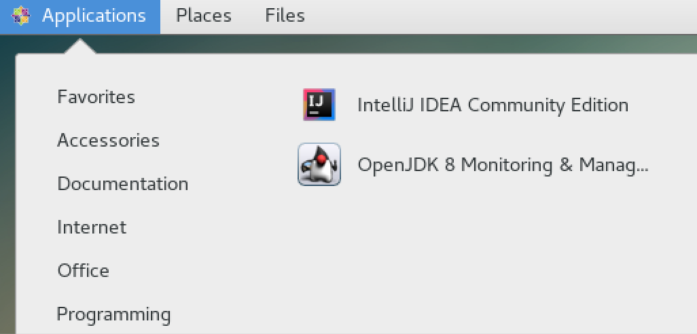

Create VM from image.
- Download VirtualBox VM https://www.virtualbox.org/wiki/Downloads
2. File -> Import Appliance -> click on the folder image(LabVM_1.ova)
- Let it load. Password: Xiamen123,
- check 2 things - 1. skil ce 2. intellij
Skil ce
1.open terminal. Type sudo systemctl start skil ( need to retype password)
3. Will come to this interface. Done
Intellij
- Applications ->Programming->Click on Intellij (takes a few minutes to start)

- should load deeplearning4j-examples-parent
3. Run -> Run MLPClassifierLinear